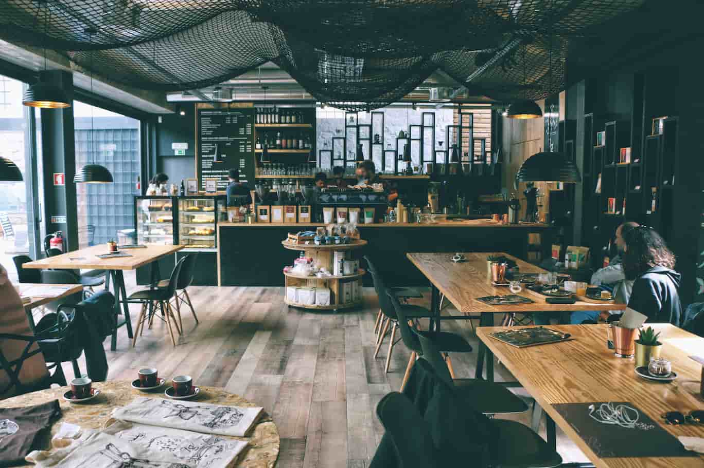

At Luna & Leaf, we believe that the world doesn't stop moving just because the sun goes down. In fact, for many of us, it's when the world finally gets quiet enough to hear ourselves think.
Founded in 2026, Luna & Leaf was born from a simple observation: late-night workers, creators, and night-owls were being left in the cold—literally. With cafes closing at 6:00 PM and co-working spaces operating on rigid 9-to-5 schedules, the "after-hours" crowd had nowhere to go but home.
We created a space where the rhythm of the night is celebrated, not ignored.
We've designed our environment to evolve with the time of day.
We don't believe in "late-night compromise." That's why our baristas are trained in artisanal brewing techniques, our snacks are crafted from fresh, locally sourced ingredients, and our high-speed infrastructure is maintained to ensure your connection is as strong at 1:00 PM as it is at 4:00 AM.
Whether you're wrapping up a coding sprint, finishing a manuscript, or just seeking a peaceful place to think, you'll find a seat, a plug, and a perfect cup waiting for you.